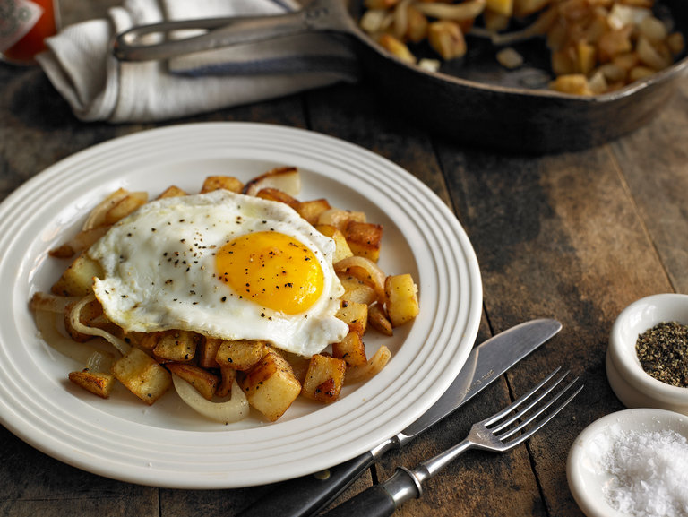

Potato Hash

Description
Potato and onion hash that is easy and comforting.
Ingredients
- 1 tblsp vegetable oil
- 1 medium onion, chopped into half moons
- 2 cups skin on potatoes, dice into 1/2 inch pieces
- 1/4 tsp cayenne pepper
- 1 large egg
Steps
- Heat skillet over medium heat, add oil and onion and pinch of salt.
Cook for about a minute or so till onion is soft.
- Add potato and cayenne and reduce to medium-low and cook until
potatos are tender and onions and potato are carmelized.
30 minutes or so.
- Slide potatos and onions to side, increase to medium and
crack egg into pan and cook to desired wellness. Plate potato
and onions and slide egg on top. Salt and Pepper for taste.